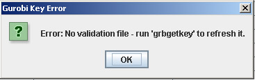

Help Topics
- Load SBML
- Load CSV
- Load Excel Spreadsheets
- Load from Model Collection
- Saving Files
- Clear Tables
- Exit
- Visualize Compartment
- Show Visualization Report
- Locate Identifier Columns
- Set Edge Flux Levels
- Reset Edge Flux Levels to Default
- Visualization Frame Menus
- Select Solvers
- Set Solver Parameters
- Graph All in Database
- Scale Edge Thickness
- Ignore Water for Reaction Matching
- Show Visualization Report
FBA Tutorial - No FVA Results
Step 1
Load Model. Select File –> Load from Model Collection Database (Alt+F then Alt+D). Select ecoli_core_model, then click the OK button on the Model Collection dialog. This model will be used for this tutorial since it is a small model and therefore analysis will be completed rapidly on any computer.
The progress bar will appear while the model is loading, then close when the load is finished.
Set Biological Objective. Usually the biomass reaction is chosen as the Biological Objective to be maximized. An easy way to find the biomass reaction in most models is to use the Find/Replace dialog using Control-F keystroke on the keyboard. Type in biomass, and click the Find button.
Once this reaction is located, scroll right to the Biological Objective column. All models in the Model Collection table already have the biomass reaction objective set to 1.0, so this will not need to be changed.If a model from a different source is used, the Biological Objective may need to be set.
Step 3
Run Analysis. Select Analysis –> FBA (Alt+A then Alt+F).
If you are using Gurobi as a solver and your Gurobi license is not valid, the following error will appear:

Your Gurobi license needs to be updated or refreshed.
Otherwise, the FVA Dialog will appear:

Selecting the "Run Euclidean norm minimization" checkbox finds a unique flux set by minimizing the length of the flux vector while maintaining the FBA Biomass flux (effectively, it is E-Flux2 without formatting the reactions with gene expression data). This option provides a unique flux distribution.
Click the "No" button.
After FBA is finished, a link to the results table will be added to the tree, and results will be displayed in the console.

FBA Tutorial - Include FVA Results
Repeat Steps 1 to 3, but select the "Run FVA analysis" checkbox and click the "Yes" button on the FVA dialog. Running FBA with FVA results takes significantly more time than running FBA without FVA.
After FVA is done, two new columns, Min. Flux. and Max. Flux, will be added to the Reactions Table to display the minimum and maximum fluxes for each reaction.